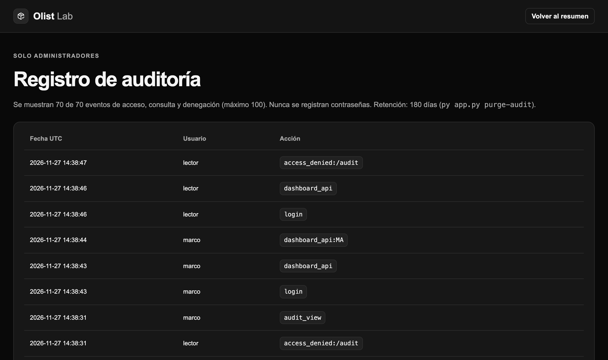
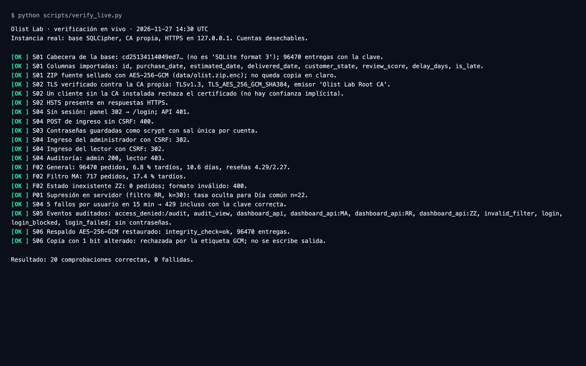

1. Resumen ejecutivo
Desarrollamos un prototipo académico para analizar las entregas tardías del conjunto histórico de comercio electrónico de Olist. Buscamos identificar segmentos que merecen una investigación logística y describir cómo varía la calificación de la compra según el cumplimiento de la fecha estimada de entrega. Para ampliar el análisis, incorporamos una segunda fuente: el calendario oficial de feriados nacionales de Brasil de 2018.
De los 99 441 pedidos del archivo original, seleccionamos 96 470 entregados con fechas y estado del cliente disponibles. Entre ellos, 6 534 llegaron después de la fecha estimada: 6.8 %. El retraso medio de esos pedidos fue de 10.6 días. La calificación promedio, calculada con las reseñas disponibles, fue de 4.29/5 para las entregas puntuales y 2.27/5 para las tardías. La comparación es descriptiva y no demuestra causalidad.
Implementamos una base SQLite cifrada con SQLCipher, un backend Flask y un panel React. La entrega final añade una CA propia que emite el certificado TLS del servidor, el sellado AES-256-GCM del ZIP fuente, la supresión de grupos pequeños en el servidor con supresión complementaria, la revocación de sesiones, el bloqueo por IP, la retención de logs y el análisis de la implementación con Bandit, pip-audit, npm audit, gitleaks y 35 pruebas automatizadas, además de 20 comprobaciones en vivo sobre HTTPS. Las herramientas encontraron 4 alertas de Bandit y 15 vulnerabilidades en dependencias, y todas se corrigieron. También detectamos y respondimos a un incidente real: credenciales de demostración publicadas en el repositorio. La DPIA, las políticas, el plan de incidentes y las recomendaciones futuras completan la entrega.
2. Introducción y caso de negocio
2.1 Problema y oportunidad
En una operación de comercio electrónico, conocer solo el número total de pedidos no permite priorizar la revisión de demoras. Un indicador global puede ocultar diferencias entre estados o meses, mientras que una lista de pedidos individuales expondría datos que el analista no necesita. Se plantea una vista agregada que permita responder: ¿cuál fue la tasa de tardanza?, ¿en qué grupos históricos fue mayor?, y ¿cómo varió la calificación observada entre pedidos puntuales y tardíos?
El usuario previsto es un analista u operador que necesita orientar una investigación posterior. La aplicación no determina responsabilidades de vendedores, no predice plazos de entrega y no toma decisiones individuales sobre clientes. El dataset es histórico (compras de 2016 a 2018); no representa por sí solo el desempeño actual de Olist ni de otra tienda.
2.2 Objetivos
Objetivo general: diseñar y demostrar un sistema de análisis agregado de entregas tardías que aporte métricas reproducibles y aplique controles de seguridad proporcionales al caso académico.
- Integrar el dataset Olist con una fuente complementaria verificable de feriados.
- Definir KPIs con denominadores explícitos y explorar variaciones por estado y mes.
- Implementar una base de datos, un backend y una interfaz de consulta con acceso restringido.
- Demostrar controles de autenticación, auditoría, transporte HTTPS local y recuperación mediante respaldo cifrado.
- Documentar riesgos, límites éticos, respuesta a incidentes y mejoras futuras sin atribuir al prototipo garantías que no ofrece.
2.3 Valor esperado y criterio de éxito
El valor del panel es reducir el tiempo para ubicar segmentos que conviene examinar y evitar compartir filas individuales en la exploración inicial. Se mide mediante la disponibilidad de indicadores con definición reproducible, el filtrado por estado y la capacidad de restaurar una copia íntegra. La línea de base de 6.8 % describe el dataset; no se fija una meta ficticia de reducción para datos históricos. Una meta operativa futura requeriría datos recientes, un período de comparación y acuerdo con el responsable del negocio.
3. Fuentes de datos, alcance y calidad
3.1 Dataset principal y fuente complementaria
El Brazilian E-Commerce Public Dataset by Olist reúne archivos CSV de pedidos, clientes, ítems y reseñas. La copia ZIP utilizada en esta ejecución tiene SHA-256 967E41E04FC306FE604E2A693F488995A8B41E5047418F8A5C8E4ABD6DECA784. El archivo original se conserva localmente sellado con AES-256-GCM en data/olist.zip.enc, fuera del repositorio Git. El origen es público, pero ello no elimina los riesgos de reidentificación o uso fuera de contexto.
La segunda fuente es la Portaria brasileña n.º 468/2017, que publica los feriados nacionales de 2018. Se transcribieron nueve fechas nacionales a holidays_2018.csv; se excluyeron puntos facultativos y feriados estatales o municipales. La unión se hace por fecha de compra, no por fecha de entrega. Esta decisión es una hipótesis exploratoria y no implica que el feriado causara un retraso.
| Fuente | Uso en el proyecto | Campos relevantes |
|---|---|---|
| Olist: pedidos | Selección de pedidos entregados y cálculo temporal | Estado y fechas de compra, estimada y real |
| Olist: clientes | Agrupación geográfica amplia | Estado federado |
| Olist: reseñas | Satisfacción observada | Puntuación 1–5 |
| Portaria 468/2017 | Etiquetar compras en feriado nacional de 2018 | Fecha y nombre del feriado |
Procedencia y uso de las fuentes.
3.2 Selección y limitaciones del dato
El importador conserva pedidos con estado delivered, fechas de compra, entrega estimada y entrega real, y estado del cliente disponibles. Del total de 99 441 pedidos, 96 478 constan como entregados; ocho de ellos no cumplen todos los campos necesarios. En consecuencia, se incluyen 96 470 y se excluyen 2 971 en total. El período de compra incluido va del 15 de septiembre de 2016 al 29 de agosto de 2018; los extremos de ambos años son parciales.
En la tabla importada faltan 646 puntuaciones de reseña (0.67 % del total). La media de reseñas puntuales usa 89 443 puntuaciones disponibles entre 89 936 pedidos puntuales; la de tardías usa 6 381 puntuaciones entre 6 534 pedidos tardíos. Los pedidos sin reseña siguen en el denominador de la tasa de tardanza, pero no en el promedio de puntuación. El importador toma la primera reseña que encuentra por pedido; por ello, no se asume que exista una única reseña por pedido. En las 96 470 filas importadas no se observaron fechas de entrega anteriores a la compra, puntuaciones fuera de 1–5 ni incoherencias entre el indicador de tardanza y la diferencia de fechas. Estos chequeos no sustituyen una auditoría completa del dataset.
3.3 Definición de indicadores
Se convierte cada marca temporal a fecha calendario. Para el pedido i, di es la diferencia en días entre fecha real y estimada y ti = 1 si di > 0; en otro caso ti = 0. Al truncar a fecha, una entrega posterior dentro del mismo día estimado se considera puntual. Esta es una convención del prototipo que debe explicitarse al interpretar los resultados.
Las puntuaciones medias se calculan solo para los pedidos con review_score presente dentro de cada grupo. Los porcentajes se redondean a una cifra decimal para la presentación; el cálculo usa todos los registros incluidos.
| Indicador | Resultado | Base de cálculo |
|---|---|---|
| Pedidos analizados | 96 470 | Entregados y completos |
| Entregas tardías | 6 534; 6.8 % | 6 534 / 96 470 |
| Retraso medio entre tardías | 10.6 días | Solo 6 534 tardías |
| Calificación media puntual | 4.29 / 5 | 89 443 reseñas |
| Calificación media tardía | 2.27 / 5 | 6 381 reseñas |
Línea de base calculada desde la base SQLite del prototipo.
4. Análisis descriptivo y utilidad
La tasa global sirve como referencia para leer las desagregaciones, no como una meta. Entre los estados con al menos 30 pedidos, las tasas más altas son AL (21.4 %; 397 pedidos), MA (17.4 %; 717) y SE (15.2 %; 335). Entre los meses de compra con al menos 30 pedidos, destacan marzo de 2018 (19.0 %; 7 003 pedidos), febrero de 2018 (14.1 %; 6 555) y noviembre de 2017 (12.4 %; 7 288). Estos grupos son candidatos para investigación, no evidencia suficiente para atribuir la demora a una región, un vendedor o una fecha concreta.
En 2018 hay 641 pedidos comprados en feriado nacional, de los cuales 37 fueron tardíos (5.8 %). En los demás días del mismo año hay 52 136 pedidos y 4 041 tardíos (7.8 %). La comparación es desigual en tamaño y no controla por estacionalidad, estado, tipo de producto ni operador logístico; no se interpreta como efecto causal. Cuando un grupo contiene menos de 30 pedidos, el servidor no envía su porcentaje: solo el tamaño de la muestra. Si se ocultara un único grupo, se oculta también otro para que no pueda deducirse por diferencia.
5. Marco teórico
El objetivo de seguridad de Olist Lab combina confidencialidad, integridad y disponibilidad. La confidencialidad limita quién puede leer datos y registros. La integridad permite detectar cambios no autorizados en una copia. La disponibilidad requiere que el equipo pueda recuperar la base tras una pérdida. Usamos NIST CSF 2.0 como referencia para relacionar estas metas con identificación de riesgos, protección, detección, respuesta y recuperación.
5.1 Cifrado y autenticación de copias
SQLCipher cifra las páginas de la base con AES-256 y protege su integridad con HMAC según su configuración por defecto. Esto protege el archivo frente a lectura directa sin la clave. Para respaldos, AES-GCM cifra y autentica la copia. La etiqueta permite detectar alteraciones y el nonce debe ser único para cada cifrado con una misma clave. La prueba del final muestra que la aplicación admite una copia válida y rechaza una alterada.
5.2 Hash de contraseñas y TLS
Un hash de contraseñas con sal y costo de cómputo permite verificar una contraseña sin guardarla de forma recuperable. La sal dificulta reutilizar cálculos entre cuentas. TLS protege el tráfico en tránsito y puede autenticar al servidor si se valida su certificado. En la entrega final el certificado del servidor lo emite una CA propia del proyecto (RFC 5280); el cliente que instala esa raíz valida la cadena y el nombre del host, mientras que uno sin ella rechaza la conexión.
5.3 Autenticación, autorización y trazabilidad
La autenticación establece qué cuenta inició sesión. La autorización comprueba qué puede hacer esa cuenta. En Olist Lab, Flask permite a lectores consultar los indicadores y reserva la auditoría a administradores. Los eventos permiten reconstruir accesos, consultas y fallos. Su valor depende de limitar el acceso y acordar plazos de conservación.
5.4 Minimización y reidentificación
Quitamos los identificadores del cliente de las salidas y agrupamos los resultados. La vinculación por fechas, ubicación o identificadores persistentes puede permitir reidentificación si alguien dispone de otra fuente. Una agrupación pequeña también puede revelar información por inferencia. Por eso la DPIA evalúa el conjunto original, la base y la salida pública por separado.
6. Requerimientos de seguridad
La tabla resume cada requerimiento de seguridad, en qué entrega se implementó (E1: avance; EF: entrega final) y la evidencia reproducible. Las comprobaciones con pytest se ejecutan sobre una instancia aislada con datos sintéticos; las de verify_live se ejecutan sobre la instancia real mediante HTTPS validado contra la CA propia (validación de extremo a extremo).
| ID | Requerimiento y control | Entrega | Evidencia observada | Alcance o límite |
|---|---|---|---|---|
| S01 | Datos en reposo: base SQLCipher (AES-256 + HMAC por página); ZIP fuente sellado con AES-256-GCM; claves de 256 bits con permisos 0600 y carpeta configurable (OLIST_KEY_DIR). | E1 / EF | Cabecera no legible; una clave errónea no abre la base; ZIP en claro eliminado; 96 470 filas con la clave. | Las claves siguen en el equipo de la demo salvo que se use otro volumen. |
| S02 | Datos en tránsito: HTTPS con certificado emitido por la CA propia del proyecto, TLS ≥ 1.2 y HSTS. | EF | TLS 1.3 (TLS_AES_256_GCM_SHA384) verificado contra la CA; un cliente sin la CA rechaza la conexión. | La CA es privada: solo los equipos que la instalen confían en ella. |
| S03 | Hash de contraseñas: scrypt con sal (Werkzeug); mínimo 12 caracteres con mayúsculas, minúsculas y dígito. | E1 / EF | Hashes únicos por cuenta; contraseñas débiles rechazadas. | Sin MFA. |
| S04 | Gestión de accesos: sesión obligatoria, roles admin, analyst y reader, CSRF, sesión de 30 min, bloqueo por usuario (5) y por IP (20) en 15 min, cookies Secure, HttpOnly y SameSite, CSP. | E1 / EF | API sin sesión 401; panel 302; auditoría 403/200; sin CSRF 400; sexto intento 429. | Los roles analyst y reader comparten permisos analíticos. |
| S05 | Registros de auditoría: ingresos, fallos, bloqueos, consultas, filtros inválidos, accesos denegados, CSRF rechazado y altas/bajas de usuarios; retención de 180 días. | E1 / EF | Eventos persistidos sin contraseñas; purge-audit elimina registros vencidos. | Los logs están en la misma base; no hay SIEM. |
| S06 | Respaldo y recuperación: copia AES-256-GCM autenticada, rotación (--keep), restauración con integrity_check. | E1 / EF | 96 470 filas restauradas; una copia con un bit alterado se rechaza sin escribir salida. | La copia debe guardarse fuera del equipo. |
| S07 | Herramientas de análisis: Bandit (SAST), pip-audit y npm audit (SCA), gitleaks (secretos), pytest y verificación en vivo; CI semanal. | EF | 0 hallazgos tras corregir 4 B101, 3 B608 y 15 CVE de npm (tabla de herramientas). | No sustituye una prueba de penetración. |
| S08 | Uso seguro: política, procedimiento, concientización y formación del equipo. | E1 / EF | Políticas; ejercicio de formación ejecutado sobre el incidente real. | El cumplimiento organizativo no se audita externamente. |
| S09 | Riesgos de una brecha y entidades afectadas. | E1 / EF | Modelo de amenazas y DPIA (amenazas, DPIA). | Evaluación cualitativa. |
| S10 | Plan de respuesta ante incidentes y recomendaciones futuras. | E1 / EF | Plan NIST SP 800-61 aplicado a un caso real; recomendaciones. | Plazos legales no evaluados por un abogado. |
Requerimientos de seguridad, entrega, evidencia y alcance.
7. Requerimientos y diseño de la solución
7.1 Requerimientos funcionales
| ID | Requerimiento y criterio observable | Entrega | Estado |
|---|---|---|---|
| F1 | Importar las dos fuentes (Olist y feriados) y consultar agregados desde la base. | E1 | Implementado |
| F2 | Mostrar tasa tardía, retraso y reseñas; filtrar por estado y mostrar serie mensual. | E1 | Implementado |
| F3 | Comparar compras en feriado y día común, mostrando tamaños de grupo. | E1 | Implementado |
| F4 | Acceder con cuenta y restringir la auditoría al administrador. | E1 | Implementado |
| F5 | Respaldar y restaurar la información; contingencia ante desastres o ataques (base, ZIP fuente y código). | E1 / EF | Implementado; rotación y sellado del ZIP en EF |
| F6 | Administrar cuentas por consola: alta, cambio de contraseña, baja, listado y purga de auditoría. | EF | Implementado |
| F7 | Servir el panel por HTTPS con un certificado de la CA propia del proyecto. | EF | Implementado |
| F8 | Consultar registros individuales o análisis por vendedor. | — | Descartado por la DPIA |
Requerimientos funcionales por entrega (E1: avance; EF: entrega final).
7.2 Planificación y ejecución
Organizamos el trabajo en dos iteraciones, alineadas con las dos entregas del curso.
| Iteración | Planificado | Ejecutado y decisiones |
|---|---|---|
| E1 (septiembre de 2026) | Caso de negocio, importación mínima, panel, autenticación, auditoría, cifrado en reposo, respaldo, primera DPIA. | SQLite migrada a SQLCipher; respaldo AES-256-GCM; Flask + React; HTTPS con un certificado temporal de Flask, reemplazado en la entrega final; primera pasada de Bandit con 3 alertas corregidas. |
| EF (noviembre de 2026) | Aplicar herramientas de seguridad, cerrar los riesgos residuales que la DPIA declaró, certificados digitales formales, evidencia reproducible. | CA propia; ZIP sellado; identificador del vendedor retirado del importador; supresión en el servidor con complemento; revocación de sesiones; bloqueo por IP; retención de logs; SCA, gitleaks y CI; 35 pruebas y verificación en vivo; respuesta a un incidente real. |
Plan y ejecución por iteración.
Usamos el repositorio de GitHub como fuente única, con commits convencionales y revisión de los cambios de seguridad antes de integrarlos. Al cerrar cada iteración, la lista de riesgos residuales de la DPIA se convirtió en la lista de tareas de la siguiente.
7.3 Arquitectura y flujo
El importador Python descifra en memoria el ZIP sellado y el CSV de feriados, selecciona las columnas necesarias y carga deliveries y holidays en SQLite cifrada con SQLCipher. Flask consulta agregados mediante SQL parametrizado, aplica la supresión de grupos pequeños y expone /api/dashboard. React consume esa respuesta y dibuja tarjetas, barras, una tabla mensual y un filtro. Flask conserva las páginas de ingreso y auditoría. La tabla users guarda credenciales con hash y rol, y audit_log registra eventos. backup.py crea instantáneas cifradas y pki.py administra la CA.
El servidor se vincula únicamente a 127.0.0.1. Existe un modo alternativo HTTP en el puerto 5001 para equipos que no puedan instalar la CA. Está limitado a la misma máquina y no protege el tráfico.
7.4 Minimización y ciclo de vida
Por cada entrega se almacenan fechas, estado del cliente, puntuación disponible y variables derivadas. No se importan identificadores de cliente, pedido ni vendedor, nombre, ciudad, código postal, coordenadas, pagos ni texto de reseñas. El ZIP original se conserva sellado (data/olist.zip.enc) y se elimina su versión en claro. La base, las claves, la CA y los respaldos están fuera del control de versiones. Al finalizar el curso se eliminarán el ZIP sellado, la base, los respaldos y la CA, y la CA se desinstalará de los equipos donde se haya instalado.
8. Diseño de seguridad y ética
8.1 Modelo de amenazas
Los activos principales son la base operativa, los archivos de origen, los respaldos, las claves, la CA, las credenciales y los registros de auditoría. Los adversarios plausibles son un usuario no autorizado con acceso al equipo, un atacante en la red local que intercepte o suplante el servidor, un usuario legítimo que intente inferir datos individuales a partir de los agregados y un integrante que publique por error secretos o archivos.
| Amenaza | Medida actual | Riesgo residual / medida futura |
|---|---|---|
| Lectura indebida de la base o del ZIP | SQLCipher; ZIP sellado; claves 0600 en una carpeta separable; minimización | Con acceso total al equipo y sus claves, el atacante descifra; usar KMS/HSM |
| Robo de credenciales o sesión | scrypt, CSRF, bloqueo por usuario e IP, sesión de 30 min revocable, cookies seguras | Agregar MFA |
| Intercepción o suplantación del servidor | TLS ≥ 1.2 con la CA propia; HSTS | La CA debe instalarse solo en equipos de la demo |
| Inferencia sobre grupos pequeños | Supresión k=30 en el servidor y supresión complementaria | Ataques con consultas repetidas a otros filtros; evaluar privacidad diferencial |
| Alteración o pérdida del respaldo | AES-GCM autenticado, rotación, restauración verificada | Copia fuera del equipo y pruebas periódicas |
| Publicación accidental de secretos | .gitignore, gitleaks en CI, credenciales leídas del entorno | Hook pre-commit y revisión obligatoria |
Amenazas, controles y límites observables.
8.2 Protección en reposo
Las contraseñas se procesan con scrypt (Werkzeug), con sal por cuenta, y se exigen al menos 12 caracteres con mayúsculas, minúsculas y dígitos. La base operativa usa SQLCipher 4 con una clave aleatoria de 256 bits. Si el archivo conserva una cabecera SQLite legible, la apertura normal se bloquea. El ZIP original se sella con AES-256-GCM: magic ‖ nonce de 96 bits ‖ texto cifrado y etiqueta, con el magic como dato asociado. El importador lo descifra en memoria. Las claves de base, respaldo y fuente son distintas, se crean con permisos 0600 y pueden ubicarse en otro volumen mediante OLIST_KEY_DIR. Una prueba automatizada verifica que una clave incorrecta no abre la base.
8.3 Certificados digitales y protección en tránsito
En el avance usábamos un certificado temporal generado por Flask en cada arranque, que no podía validarse. En la entrega final implementamos una CA propia (pki.py):
- CA raíz “Olist Lab Root CA”: ECDSA P-384, SHA-384, 5 años,
BasicConstraints CA=true, pathlen=0yKeyUsage keyCertSign, cRLSign. Su clave privada se guarda en PKCS#8 cifrado con una frase de paso aleatoria. - Certificado del servidor: ECDSA P-256, firmado por la CA, 397 días (límite que aceptan los navegadores), SAN
localhost,127.0.0.1y::1,ExtendedKeyUsage serverAuthyCA=false. - Servidor: contexto TLS con versión mínima 1.2. En la prueba negoció TLS 1.3 con
TLS_AES_256_GCM_SHA384. AgregamosStrict-Transport-Securitya las respuestas HTTPS.
Un cliente que tiene instalada la CA valida la cadena y el nombre del host sin advertencias. Uno que no la tiene rechaza la conexión. Ambos comportamientos se comprueban automáticamente. Esa es la propiedad buscada: la confianza depende de una decisión explícita, no de ignorar advertencias. py pki.py show imprime las huellas SHA-256 para comprobarlas al instalar la CA.
8.4 Gestión de accesos y registros de auditoría
El backend reconoce los roles admin, analyst y reader. Los tres ven el panel agregado y solo admin accede a /audit. En cada solicitud la sesión se revalida contra la base: si la cuenta se borra o cambia su rol o su contraseña, las sesiones abiertas se revocan. Las sesiones expiran tras 30 minutos de inactividad. El ingreso se bloquea durante 15 minutos tras 5 fallos por usuario o 20 por IP, lo que limita tanto la fuerza bruta como el password spraying. Las cuentas se administran solo por consola y no hay registro web.
El registro almacena la fecha UTC, la cuenta y la acción: ingreso, fallo, bloqueo, salida, consulta, filtro inválido, acceso denegado, CSRF rechazado, sesión revocada y cambios de cuentas. Nunca guarda contraseñas. La política de retención es de 180 días y py app.py purge-audit elimina los eventos vencidos, dejando a su vez constancia de la purga.
9. Estrategia de uso seguro, políticas y formación
9.1 Política del equipo
- Finalidad: usar los datos solo para el proyecto académico y el análisis agregado. Se prohíben decisiones individuales sobre compradores o vendedores.
- Acceso: una cuenta individual por integrante con el rol mínimo necesario. No se comparten contraseñas ni sesiones, y se cierra sesión al terminar.
- Secretos: ninguna contraseña, clave o certificado privado se escribe en el código. Los scripts leen las credenciales de variables de entorno y la CI ejecuta gitleaks.
- Almacenamiento y publicación: no se suben a servicios públicos el ZIP, la base, las claves, los respaldos ni capturas con filas individuales. Antes de publicar se revisan
git statusygit diff --cached. - Transferencia: se comparten solo el informe y el código. La CA se instala únicamente en los equipos de la demo.
- Retención: los logs se conservan 180 días; los archivos locales, hasta el cierre del curso. Después se eliminan y se desinstala la CA.
- Uso analítico: se muestran denominadores y se advierte que correlación, feriados y diferencias geográficas no prueban causas.
9.2 Procedimiento, concientización y formación
Antes de cada presentación revisamos el modo del servidor, la cuenta utilizada, las rutas del repositorio y las capturas previstas. Para formarnos realizamos un ejercicio sobre un caso real: el incidente de credenciales publicadas. En él (1) reconocimos el secreto expuesto, (2) aplicamos el plan de respuesta, (3) restauramos un respaldo y verificamos su integridad, y (4) distinguimos el HTTP local del HTTPS validado por la CA. La lección que acordamos es que borrar un archivo no borra su historial: la única mitigación efectiva para un secreto publicado es rotarlo.
10. Respuesta ante incidentes y recuperación
10.1 Plan básico
Consideramos incidentes la pérdida de la base, la publicación accidental de datos, claves o credenciales, el acceso no autorizado y la alteración de resultados. El plan sigue a grandes rasgos NIST SP 800-61 Rev. 3.
| Fase | Acción del equipo | Evidencia / resultado esperado |
|---|---|---|
| Detección | Quien observe el incidente avisa al otro integrante y registran la hora UTC, el sistema afectado y la señal observada. Fuentes: auditoría (login_blocked, access_denied, csrf_rejected), CI, alertas de Dependabot. | Ficha del incidente, sin copiar secretos. |
| Contención | Detener el servicio si procede, aislar el equipo, retirar publicaciones, rotar contraseñas (set-password, que revoca las sesiones) o borrar cuentas (delete-user). | Registro de acciones y horas. |
| Análisis | Revisar logs, el historial de Git y el alcance de lo expuesto; distinguir pérdida, acceso y divulgación. | Alcance provisional e incertidumbres explícitas. |
| Recuperación | Restaurar el último respaldo íntegro (backup.py restore), verificar el número de filas, renovar claves o reemitir el certificado (pki.py server). | integrity_check = ok; verify_live 20/20. |
| Comunicación | Informar al profesor y a los responsables; evaluar con asesoría las obligaciones legales si hubiera datos personales (Ley 29733, LGPD). | Comunicación precisa, sin afirmar ausencia de daño antes de investigar. |
| Mejora | Documentar la causa, las correcciones y una nueva prueba. | Lección aprendida y control nuevo. |
Plan de respuesta ante incidentes.
10.2 Caso real: credenciales de demostración publicadas
- Detección
- Al revisar el código para la entrega final encontramos que
frontend/generate_screenshots.js, publicado en el commit861221ade un repositorio público, contenía en texto plano las contraseñas de las cuentas localesmarco(admin) ylector. gitleaks no lo detectó. - Análisis
- Las cuentas solo existen en la base local y el servidor escucha en
127.0.0.1, así que la explotación requería acceso al equipo. No hubo exposición de datos de clientes. Aun así, el secreto debe tratarse como comprometido, porque permanece en el historial. - Contención y recuperación
- Rotamos ambas contraseñas con valores aleatorios, guardados fuera del repositorio. Reescribimos el script para que lea las credenciales del entorno y añadimos la revocación de sesiones al cambiar una contraseña. No reescribimos el historial compartido: con las contraseñas ya rotadas, no reduce el riesgo y sí afecta al otro integrante.
- Mejora
- Añadimos gitleaks a la CI, la regla 3 de la política y la revisión de
git diff --cachedantes de cada commit.
10.3 Contingencia y respaldo
- Base:
py backup.py backup instance/backups/AAAAMMDD.enc --keep 7crea una copia autenticada y conserva las 7 más recientes. La restauración se hace siempre a otra ruta y verifica la integridad. Una copia con un solo bit alterado se rechaza. - ZIP fuente: se conserva sellado y es descargable de nuevo desde Kaggle, comprobando su SHA-256.
- Código: está en GitHub, con un espejo en la cuenta del segundo integrante y un clon local por integrante.
git bundlepermite generar una copia completa sin conexión. - Claves y CA: si se pierde
db.key, la base es irrecuperable por diseño. Por eso la clave se respalda por separado, fuera del equipo. Si se pierde la CA, se reemite conpki.py inity se reinstala en los clientes.
En una operación real se definirían con el negocio los objetivos RPO y RTO (punto y tiempo de recuperación), y las copias se almacenarían fuera del sitio.
11. Implementación y evidencias visuales
11.1 Componentes desarrollados
| Archivo | Responsabilidad |
|---|---|
import_data.py | Importación mínima desde el ZIP sellado y los feriados. |
db_crypto.py | Conexión SQLCipher, rutas y custodia de claves. |
app.py | Autenticación, sesión, roles, API con supresión, auditoría y administración por consola. |
pki.py | CA propia, certificado del servidor, validación y contexto TLS. |
backup.py | Respaldo, restauración, rotación y sellado del ZIP. |
migrate_db.py | Migración de SQLite en claro a SQLCipher (avance). |
frontend/src/App.tsx | Panel React con componentes shadcn/ui. |
tests/, scripts/ | 35 pruebas, verificación en vivo, escaneo de seguridad y capturas. |
Componentes del sistema.
11.2 Evidencias visuales del prototipo
(Haz clic en cualquier captura para ampliarla)
1 Panel general servido por HTTPS
Vista global
Contenido: cuatro indicadores, ranking por estado y serie mensual. La vista muestra 96 470 pedidos, 6.8 % de tardanza (6 534), 10.6 días de retraso medio entre los tardíos y una calificación de 4.29 frente a 2.27. No se exponen nombres, direcciones ni identificadores.
2 Filtro por Maranhão (MA)
Estado MA
Contenido: al filtrar por Maranhão (MA), el panel muestra 717 pedidos y 17.4 % de tardanza, calculados por la API en el servidor.
3 Auditoría visible solo para el administrador
Roles · 403
Contenido: la página de auditoría solo es accesible para el rol admin y registra el acceso denegado (403) del lector.
11.3 Validación de extremo a extremo
scripts/verify_live.py levanta el servidor real con el certificado de la CA propia, crea dos cuentas desechables con contraseñas aleatorias que nunca se imprimen, ejecuta solicitudes HTTPS reales y elimina las cuentas al terminar. La figura 4 reproduce su salida sin edición. Las 20 comprobaciones fueron correctas: cifrado y minimización de la base, sellado del ZIP, TLS 1.3 verificado, rechazo de clientes sin la CA, HSTS, control de sesión, CSRF, hash, roles, indicadores (96 470 general; 717 en MA), validación de entrada, supresión de grupos pequeños, bloqueo por fuerza bruta, auditoría y restauración con detección de alteraciones.
4 Salida real de verify_live.py
20/20 · HTTPS
Fuente: salida sin edición de scripts/verify_live.py sobre la instancia de la demo (texto en informe/evidencias/verificacion-final.txt). Resultado: 20 comprobaciones correctas, 0 fallidas.
12. Análisis de la implementación con herramientas de seguridad
A diferencia del avance, la entrega final exige aplicar herramientas de seguridad para analizar la implementación. Combinamos análisis estático (SAST), análisis de composición de software (SCA), búsqueda de secretos y pruebas automatizadas. Todo se ejecuta con un solo comando, scripts/security_scan.sh, y además en GitHub Actions (.github/workflows/security.yml) en cada push y cada lunes, para detectar vulnerabilidades publicadas después de la entrega. Dependabot propone actualizaciones semanales de dependencias.
| Herramienta | Tipo | Hallazgo | Corrección | Final |
|---|---|---|---|---|
| Bandit 1.9 | SAST | 3 × B608 (SQL dinámico) en el panel, primera pasada. | Consultas fijas con parámetros con nombre. | 0 |
| Bandit 1.9 | SAST | 4 × B101 en pki.py: la validación del certificado usaba assert, que python -O elimina; 1 × B105 (falso positivo). | Validaciones explícitas que lanzan ValueError. | 0 en 859 líneas |
| npm audit | SCA JS | 15 vulnerabilidades (7 altas) en dependencias de producción: undici, hono, zod, systeminformation, arrastradas por el CLI shadcn y el paquete cn. | shadcn pasa a desarrollo; cn se reemplaza por 3 líneas propias; npm audit fix. | 0 |
| pip-audit | SCA Python | Sin vulnerabilidades conocidas en Flask, cryptography y sqlcipher3. | — | 0 |
| gitleaks 8 | Secretos | Sin alertas en el historial, pero la revisión manual halló dos contraseñas de demo en un script (caso real). | Credenciales leídas del entorno y rotadas. | Invalidadas |
| pytest | Pruebas | 35 pruebas de S01–S06, P01 y F1–F3 sobre datos sintéticos, incluidas la revocación de sesiones y la supresión complementaria. | — | 35/35 |
verify_live | E2E HTTPS | 20 comprobaciones sobre la instancia real con TLS validado por la CA. | — | 20/20 |
Herramientas aplicadas, hallazgos y correcciones. Reportes en informe/evidencias/.
12.1 Tres aprendizajes
- La mayor superficie de riesgo no estaba en nuestro código, sino en dependencias: un CLI de desarrollo declarado como dependencia de producción arrastraba un servidor HTTP y un SDK completos.
- Bandit detectó un error sutil en código nuevo: un
assertde seguridad desaparece con optimizaciones. - Ninguna herramienta reemplaza la revisión humana: gitleaks no marcó contraseñas legibles porque no coinciden con sus patrones genéricos.
13. Evaluación de Impacto en la Protección de Datos (DPIA)
13.1 Alcance, flujo y necesidad
Esta evaluación cubre el prototipo académico local y la publicación de su informe. Los afectados potenciales son los compradores representados en el conjunto histórico, los vendedores, los operadores cuyas cuentas y acciones quedan en auditoría y el propio equipo. El equipo gestiona el entorno de demostración; el profesor recibe el informe y presencia la demo.
El flujo va desde el ZIP de Olist y el calendario de feriados hasta la importación, la base cifrada, la API de agregados, el panel y el respaldo. Para comparar entregas se necesitan fechas, estado federado y puntuaciones. En el avance conservábamos el identificador del vendedor (seller_id) “para una posible ampliación”; la DPIA concluyó que no era necesario para la finalidad, y en la entrega final lo retiramos del importador. Hoy la base no contiene identificadores de clientes, pedidos ni vendedores. El registro de auditoría requiere un identificador de cuenta, una acción y una marca de tiempo; la IP se guarda solo en la tabla de intentos fallidos y se borra tras 24 horas.
13.2 Clasificación de datos y alcance normativo
La revisión de cabeceras identificó los campos que se indican a continuación. No inspeccionamos exhaustivamente el contenido de las reseñas ni atribuimos categorías sensibles a personas concretas. Clasificamos los datos según su posibilidad de vincularse con una persona natural y el daño que produciría su divulgación.
| Etapa | Campos o ejemplos | Clasificación y tratamiento |
|---|---|---|
| ZIP fuente | Identificadores de clientes, pedidos y vendedores, ciudad, prefijo postal, coordenadas por prefijo, fechas, valor y tipo de pago, título y texto de reseña. | Los identificadores y los atributos enlazables pueden identificar indirectamente. Importes, ubicación y comentarios merecen acceso restringido. Los comentarios pueden revelar datos sensibles si el usuario menciona, por ejemplo, información de salud. No se importan. |
| Base operativa | Identificador secuencial interno, fechas de compra, estimada y de entrega, estado federado, puntuación y retraso. | Datos transaccionales de uso interno. Sin identificadores de clientes, pedidos ni vendedores (el de vendedor se retiró en la entrega final). Se excluyen coordenadas, pagos y texto libre. Cifrada con SQLCipher. |
| Cuentas y auditoría | Usuario, rol, hash de contraseña, marca UTC y acción. | Datos de operadores y material de autenticación de acceso restringido. El nombre de cuenta puede identificar a un integrante y el registro revela su actividad. Los hashes y claves no se publican. |
| Panel e informe | Tasas y recuentos por estado, mes y feriado. | Agregados de menor riesgo. El servidor suprime grupos menores de 30 y aplica supresión complementaria para impedir deducirlos por diferencia; la interfaz no recibe esos valores. |
Clasificación por etapa del tratamiento.
Perú. Si desde Perú se tratan datos de personas identificadas o identificables, corresponde evaluar la Ley N.º 29733 y el D. S. N.º 016-2024-JUS según quién decide la finalidad y dónde se realiza el tratamiento. En el proyecto esto afecta especialmente el uso local del ZIP enlazable y los registros de operadores. Una fecha o un prefijo postal pueden contribuir a identificar a alguien sin pertenecer por sí solos a una categoría sensible. La ley peruana incluye, entre otros, los datos sobre salud, origen racial o étnico e ingresos económicos en su definición de datos sensibles. El monto de un pedido no mide el ingreso económico del comprador. Antes de ampliar el uso deben evaluarse la base aplicable, los avisos, la retención y el ejercicio de derechos.
Brasil. El artículo 3 de la LGPD exige evaluar las conexiones territoriales del tratamiento, incluida la recolección en Brasil. El origen brasileño y la disponibilidad pública justifican revisar la procedencia y la posibilidad de identificar titulares. El artículo 4.II.b remite a los artículos 7 y 11 para el tratamiento con fines exclusivamente académicos. El artículo 5 distingue el dato personal del sensible, y el artículo 12 considera la posibilidad de revertir la anonimización con medios razonables. En consecuencia, tratamos el ZIP y los registros vinculables como material restringido. Cualquier ampliación exige comprobar la base de tratamiento de cada conjunto, especialmente si contiene información sensible en texto libre.
Decisión de publicación. Publicamos el informe, sus indicadores agregados y capturas con datos de demostración. El ZIP, las filas de la base, las claves y los logs de usuarios reales quedan fuera de la publicación. La DPIA documenta una evaluación académica de alcance y riesgos. La determinación formal del régimen aplicable y de los responsables corresponde a quienes definan un uso ulterior.
13.3 Riesgos y controles
Usamos una valoración cualitativa de probabilidad e impacto. Un riesgo alto exige tratamiento antes de ampliar el alcance; uno medio requiere seguimiento; uno bajo se acepta para la demo local mientras se mantengan sus controles.
| Riesgo | Afectados | Inicial | Controles (E1 + EF) | Residual |
|---|---|---|---|---|
| Exposición del ZIP o de las claves | Compradores, vendedores, operadores | Alto | Minimización, SQLCipher, ZIP sellado y borrado en claro, claves 0600 con carpeta separable, exclusión de Git, respaldo cifrado. | Medio-bajo |
| Reidentificación por grupos pequeños o cruces | Compradores, vendedores | Alto | Solo agregados; supresión k=30 en el servidor, no solo en la interfaz; sin identificadores en la base. | Bajo |
| Exposición de cuentas y trazas | Equipo, operadores | Alto | scrypt, roles, sesión de 30 min, bloqueo por usuario e IP, retención de 180 días; contraseñas filtradas rotadas. | Medio |
| Interpretación injusta de indicadores | Vendedores, regiones, operadores logísticos | Medio | Denominadores visibles; advertencias de causalidad, cobertura temporal y reseñas ausentes. | Bajo |
| Pérdida de datos o del material de recuperación | Equipo, continuidad | Alto | Respaldo autenticado, rotación, restauración verificada, código en dos repositorios remotos. | Medio |
| Suplantación del servidor (MITM local) | Usuarios del panel | Medio | CA propia, TLS ≥ 1.2, HSTS; un cliente sin la CA rechaza la conexión. | Bajo |
Riesgos, afectados y riesgo residual tras la entrega final.
13.4 Consideraciones éticas
- Consentimiento y finalidad. Que el conjunto sea público no implica que los compradores hayan consentido cualquier uso. Limitamos la finalidad a un análisis académico agregado y prohibimos en la política decisiones individuales sobre compradores o vendedores.
- Sesgo y equidad. Las tasas por estado reflejan distancia, infraestructura y operadores, no la “calidad” de una región ni de sus habitantes. Las reseñas solo existen para quien decidió escribirlas; quien no reseña queda fuera del promedio, lo que puede sesgar la satisfacción observada. Por eso el panel muestra denominadores y el informe evita lenguaje causal.
- Transparencia. El panel indica fuentes, período y supresión de grupos pequeños; el informe documenta qué campos se excluyen y cómo se calcula cada indicador; el código y las pruebas son públicos y reproducibles.
- Responsabilidad propia. El incidente de credenciales mostró que un equipo pequeño también puede exponer secretos. Lo documentamos en lugar de ocultarlo.
13.5 Decisión y seguimiento
Aceptamos el riesgo residual para la demo local con datos históricos y la publicación de agregados. Antes de cualquier uso con datos reales o usuarios externos deberá reevaluarse esta DPIA: si se añaden datos, cambian los destinatarios o se despliega el backend fuera del equipo. El informe no registra consulta a afectados ni aprobación para un despliegue real.
14. Recomendaciones de protección futura
Las siguientes medidas no se implementaron en esta entrega. Las recomendamos porque reducen riesgos residuales concretos:
- Custodia de claves en KMS/HSM o en el llavero del sistema: hoy las claves pueden separarse en otro volumen, pero un atacante con control total del equipo las obtiene. Un KMS añade control de acceso, rotación y auditoría propios.
- MFA (TOTP o WebAuthn): mitiga el robo de contraseñas, el único factor actual.
- Servidor WSGI de producción tras un proxy inverso, con certificado de una CA pública: el servidor de Werkzeug es de desarrollo, y una CA pública evita instalar una raíz privada en cada cliente.
- Privacidad diferencial para los agregados: la supresión k=30 no protege frente a muchas consultas combinadas. Añadir ruido calibrado, por ejemplo con OpenDP, daría garantías formales.
- Centralización de logs (SIEM) e integridad de la auditoría: enviar los eventos a un almacén de solo anexado evita que un administrador comprometido los borre.
- Respaldos fuera del sitio con RPO y RTO pactados y pruebas trimestrales de restauración.
- Hook pre-commit con gitleaks y reglas propias para cadenas con forma de contraseña, que la regla genérica no detecta.
- Roles diferenciados: dar a
analystyreaderpermisos distintos (por ejemplo, exportación) con un principio de mínimo privilegio documentado.
15. Lecciones aprendidas y retrospectiva del equipo
15.1 Lecciones técnicas, analíticas y de seguridad
- Definir el KPI antes de importar permitió dejar fuera casi todos los campos personales. Retirar
seller_iddemostró que “por si acaso” no es una finalidad. - La supresión en la interfaz no es un control. En el avance, la API devolvía la cifra que el panel ocultaba. Llevarla al servidor y añadir la supresión complementaria cerró el canal de inferencia.
- Las dependencias son la mayor superficie de ataque. Las 15 vulnerabilidades vinieron de un CLI de desarrollo mal clasificado, no de nuestro código.
- Las herramientas complementan la revisión humana, no la sustituyen. Bandit encontró un
assertpeligroso y gitleaks no detectó contraseñas reales. - Restaurar es la prueba de un respaldo. Generar el archivo cifrado no basta: hay que restaurarlo y alterarlo a propósito.
- Un certificado autofirmado sin CA enseña a ignorar advertencias. La CA propia convierte la confianza en una decisión explícita.
15.2 Retrospectiva del equipo
- Qué funcionó
- Usar la DPIA como lista de tareas entre iteraciones, documentar honestamente los límites y automatizar la evidencia: las cifras del informe salen de scripts, no de capturas manuales.
- Qué no funcionó
- En el avance usamos credenciales reales en scripts de prueba y una figura de terminal compuesta a mano; ambas cosas restaron confiabilidad a la evidencia. Los controles de privacidad se pensaron primero en la interfaz y no en la API.
- Qué haremos distinto
- Configurar la CI y los hooks de secretos desde el primer commit; escribir la prueba de cada requerimiento al mismo tiempo que el control; revisar entre ambos todo cambio de seguridad y registrar las decisiones de arquitectura.
16. Conclusiones y referencias
El prototipo responde al caso de negocio con métricas históricas verificables y una interfaz agregada. La línea de base de 6.8 % de entregas tardías y la diferencia de puntuaciones permiten priorizar preguntas para una investigación logística posterior, pero no establecen causas ni metas operativas actuales. La integración de feriados añade una segunda fuente y demuestra por qué los grupos pequeños y las comparaciones no controladas requieren cautela.
En materia de seguridad cumplimos los requerimientos de la entrega final con evidencia reproducible:
- Cifrado en reposo y en tránsito: SQLCipher para la base, AES-GCM para el ZIP y los respaldos, y TLS 1.3 con un certificado de la CA propia.
- Credenciales y accesos: hash scrypt, roles, sesiones revocables y una auditoría con retención.
- Herramientas de análisis: sus hallazgos se corrigieron.
- Respuesta a incidentes: un plan que aplicamos a un caso real.
Persisten límites que reconocemos: las claves residen en el equipo de la demo, la CA es privada y el servidor es de desarrollo. El resultado es una demostración académica funcional y verificable, no un sistema listo para operar con datos personales reales en producción.
- Curso DS3031. Esquema Proyecto de Ética y Seguridad de Datos (Final) – Tipo 2. Material de clase proporcionado por el profesor.
- Olist. Brazilian E-Commerce Public Dataset by Olist. Kaggle. https://www.kaggle.com/datasets/olistbr/brazilian-ecommerce. Consulta: septiembre de 2026.
- Ministério do Planejamento, Desenvolvimento e Gestão de Brasil. Portaria n.º 468, de 22 de dezembro de 2017. https://www.gov.br/agricultura/pt-br/mailing/documentos/portaria-mpog-feriados-2018.pdf. Consulta: septiembre de 2026.
- Autoridad Nacional de Protección de Datos Personales. Decreto Supremo N.º 016-2024-JUS: Reglamento de la Ley N.º 29733. https://www.gob.pe/institucion/anpd/normas-legales/6554453-n-016-2024-jus. Consulta: septiembre de 2026.
- National Institute of Standards and Technology. The NIST Cybersecurity Framework (CSF) 2.0, 2024. https://www.nist.gov/cyberframework. Consulta: septiembre de 2026.
- National Institute of Standards and Technology. SP 800-61 Rev. 3: Incident Response Recommendations and Considerations for Cybersecurity Risk Management, 2025. https://csrc.nist.gov/pubs/sp/800/61/r3/final. Consulta: septiembre de 2026.
- Congreso de la República del Perú. Ley N.º 29733, Ley de Protección de Datos Personales. https://www.gob.pe/institucion/congreso-de-la-republica/normas-legales/243470-29733.
- Presidência da República do Brasil. Lei n.º 13.709/2018, Lei Geral de Proteção de Dados Pessoais, texto compilado. https://www.planalto.gov.br/ccivil_03/_ato2015-2018/2018/lei/l13709compilado.htm.
- Zetetic. SQLCipher Design. https://www.zetetic.net/sqlcipher/design/.
- NIST. SP 800-38D: Galois/Counter Mode (GCM) and GMAC. https://csrc.nist.gov/pubs/sp/800/38/d/final.
- OWASP. Password Storage Cheat Sheet. https://cheatsheetseries.owasp.org/cheatsheets/Password_Storage_Cheat_Sheet.html.
- A. Hundepool et al. Statistical Disclosure Control. Wiley, 2012.
- IETF. RFC 5280: Internet X.509 Public Key Infrastructure Certificate and CRL Profile. https://www.rfc-editor.org/rfc/rfc5280.
- IETF. The Transport Layer Security Protocol Version 1.3. https://www.rfc-editor.org/info/rfc8446/.